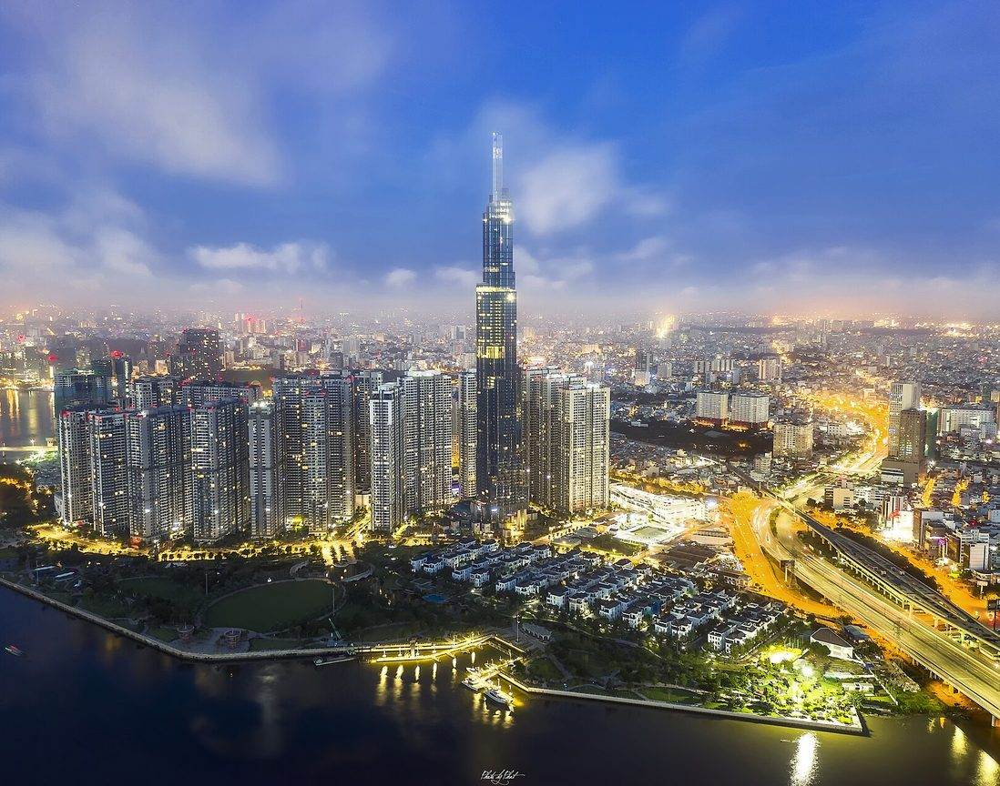
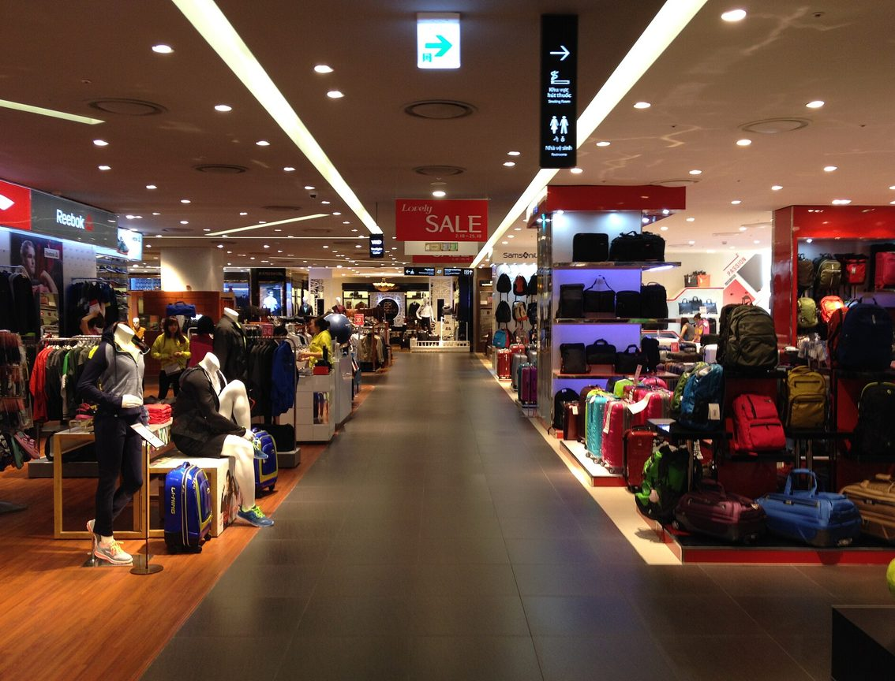
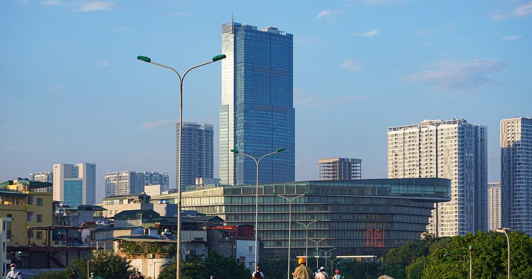
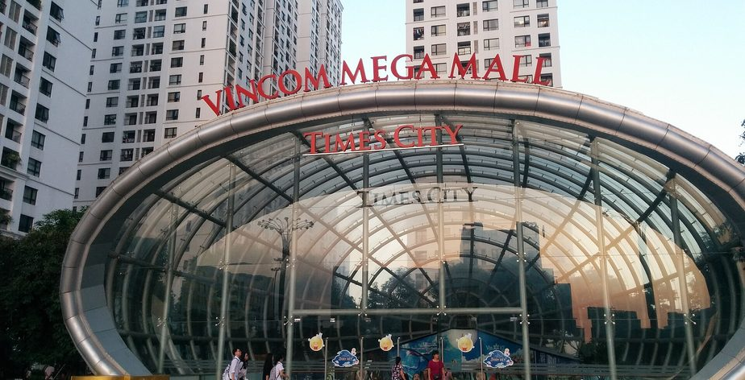
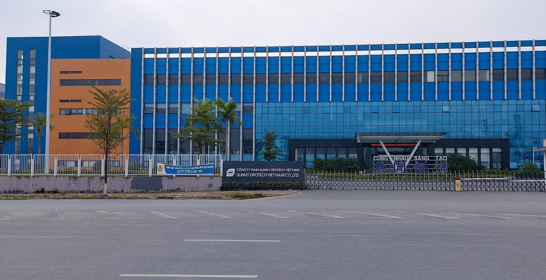
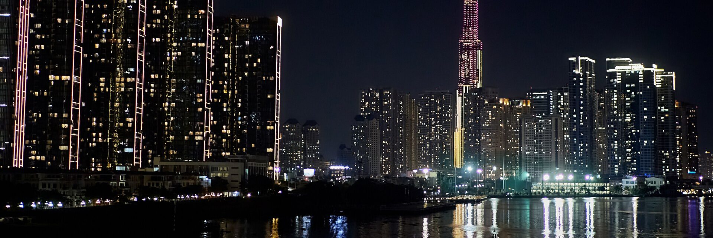
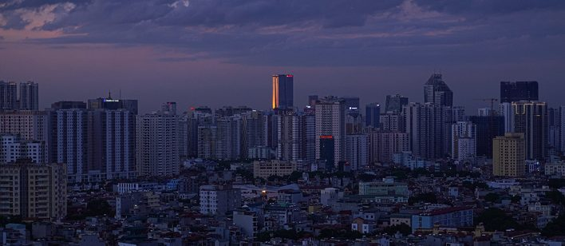
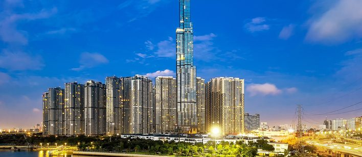
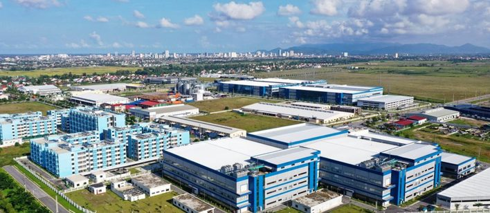

| Hanoi – Amsterdam High School 01Dự án | Daaé | Public domain |
 | Van Giang Hung YenDự án | Nguyễn Văn Thành 1992 | CC BY-SA 4.0 |
 | Dịch Vọng Hậu, Cầu Giấy, Hà Nội, Vietnam - panoramioDự án | bidvtayhanoi | CC BY 3.0 |
 | Bệnh viện Bạch Mai-IMG 0458Dự án | Newone | CC BY-SA 3.0 |
| Tòa nhà Keangnam, Cầu Giấy, Hà Nội 001Trang chủ | Phan Minh Tuấn | CC BY-SA 4.0 |
 | Ho Chi Minh City - DJI 0124-HDRTrang chủ | Lê Minh Phát | CC BY 2.0 |
 | Tầng 4, Lotte Center, Hà Nội 002Trang chủ | Phan Minh Tuấn | CC BY-SA 4.0 |
 | Lotte Center HanoiTòa nhà thông minh | Ltn12345 | CC BY-SA 4.0 |
 | Nam Từ Liêm - NKSTòa nhà thông minh | NKSTTSSHNVN | CC BY-SA 4.0 |
 | Vincom Mega Mall Times CityTòa nhà thông minh | Amenoc | CC0 |
 | Yen Binh Industrial Park SOTòa nhà thông minh | Bacthai20 | CC0 |
 | Old Quarter street scene, Hanoi (9) (38441045676)Giải pháp toàn diện | Richard Mortel from Riyadh, Saudi Arabia | CC BY 2.0 |
 | Trường THPT Chuyên Hà Nội - Amsterdam, Hà Nội 004Giải pháp toàn diện | Phan Minh Tuấn | CC BY-SA 4.0 |
 | TranQuangKhai street, Hanoi 2025Giải pháp toàn diện | DangTungDuong | CC BY-SA 4.0 |
 | Yen Binh Industrial Park TSGiải pháp toàn diện | Bacthai20 | CC0 |
 | Ho Chi Minh City panorama 2019 (cropped2)Giải pháp toàn diện | Lê Minh Phát | CC BY 2.0 |
 | Hanoi Traffic (174818911)Giải pháp toàn diện | Benjamin Arnold | CC BY 3.0 |
 | Old Quarter market, Hanoi, Vietnam, 20240204 1810 5887Giải pháp toàn diện | Jakub Hałun | CC BY 4.0 |
 | Nguyen Huu Canh Street, HCMCAIoT Platform | Thomas Galvez | CC BY 2.0 |
 | Hanoi panoramic view from Lotte 3Trung tâm AI | kallerna | CC BY-SA 4.0 |
 | Ho Chi Minh City - Saigon1324Nền section trang chủ | lumoplank | CC0 |
 | Yen Binh Industrial Park SSSản phẩm | Bacthai20 | CC0 |
 | Classic-style building in construction in HanoiSản phẩm | Amenoc | CC0 |
 | Streets of Hanoi (27767350889)Giải pháp toàn diện | dronepicr | CC BY 2.0 |
 | Hanoi view from Lotte 1Giải pháp toàn diện | kallerna | CC BY-SA 4.0 |
 | Hanoi University 05Trường học AI | Amenoc | CC0 |
 | Rizière dans la baie d'Halong intérieureAIoT Platform | Dinkum | CC0 |
 | Junction of Thâm Tâm and Trung Kính 23-11-2025. Circle K StoreSản phẩm | Gym113trunggınh | CC BY-SA 4.0 |
 | Vinhomes OCP 2Dự án | Bangnguyenbn11 | CC0 |
 | F-ville 3 (FPT Hola Park), HanoiDự án | FSO.MCP | CC BY-SA 4.0 |
 | Khu công nghiệp Mỹ ThuậnDự án | CongtyCPXDHatangDaiPhong | CC BY-SA 4.0 |
 | Yen Binh Industrial Park ssDự án | Bacthai20 | CC0 |
 | Nha dieu hanh 144 Xuan Thuy 26Jan2005-01sDự án | VNU Media | CC BY-SA 4.0 |
| Chung cư HH Linh Đàm, Hoàng Mai, Hà Nội 004Tòa nhà thông minh | Phan Minh Tuấn | CC BY-SA 4.0 |
 | Hanoi Skyline - Lotte Tower - NKSTòa nhà thông minh | NKSTTSSHNVN | CC BY-SA 4.0 |
 | DJI 0130-HDRabcTòa nhà thông minh | Lê Minh Phát | CC BY 2.0 |
| Vinmec-IMG 0074-08032012Tòa nhà thông minh | Newone | CC BY-SA 3.0 |
 | Một góc KCN VSIPTòa nhà thông minh | Hihi123ht | CC BY-SA 4.0 |
 | Nguyễn Du Senior Secondary School 01Trường học AI | Ngocj an | CC BY-SA 4.0 |
 | Trường Tiểu học Nam Thành Công. IM01Trường học AI | Doan Pham Gia Khai | CC BY-SA 4.0 |
 | Vinmec-IMG 0074-08032012AIoT Platform | Newone | CC BY-SA 3.0 |
 | Trường Trung học cơ sở Định MỹTrường học AI | Bùi Thụy Đào Nguyên | CC BY-SA 3.0 |